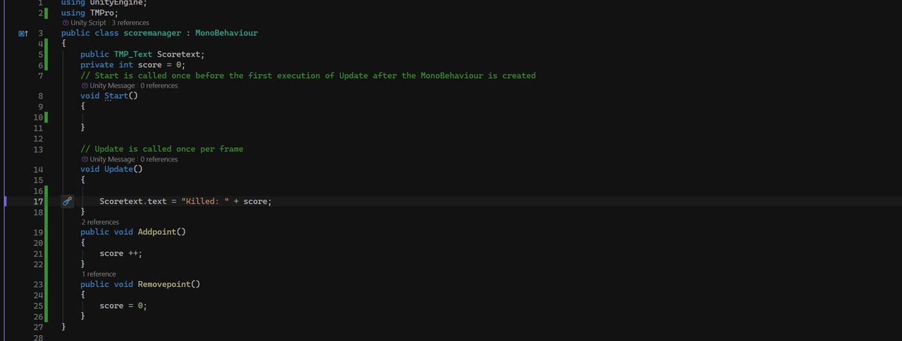
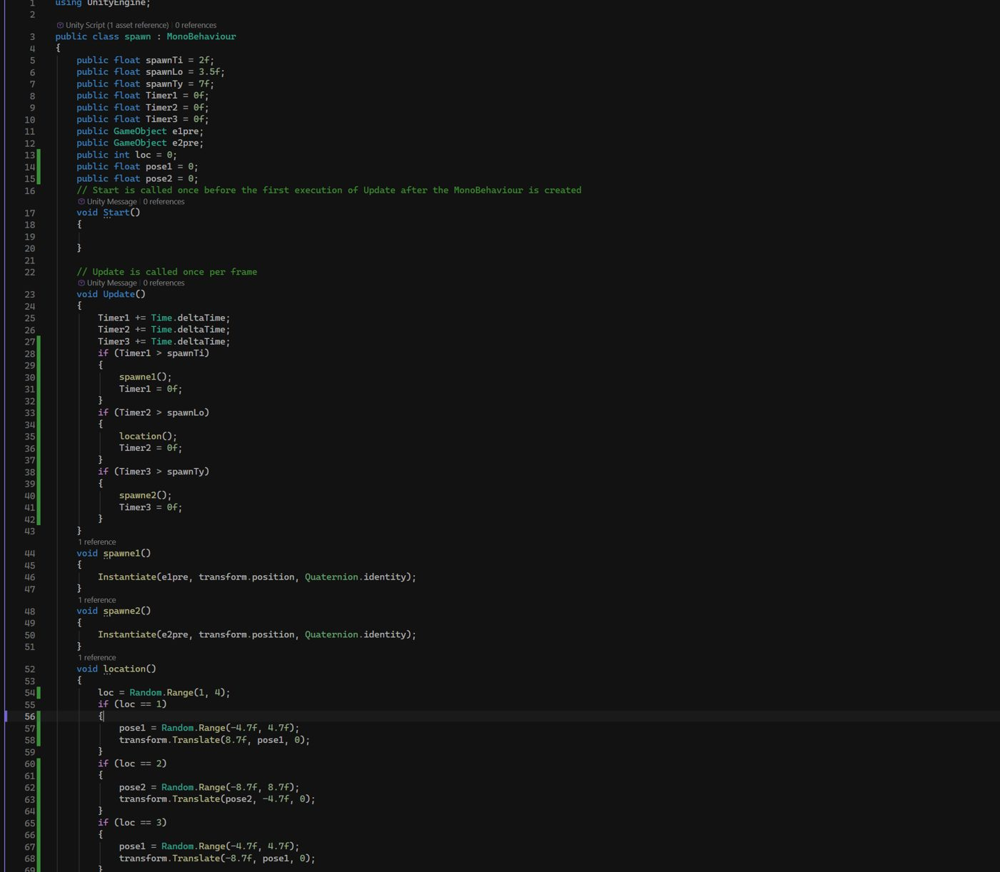
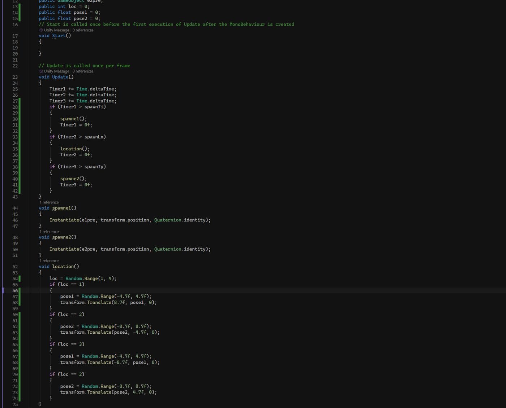
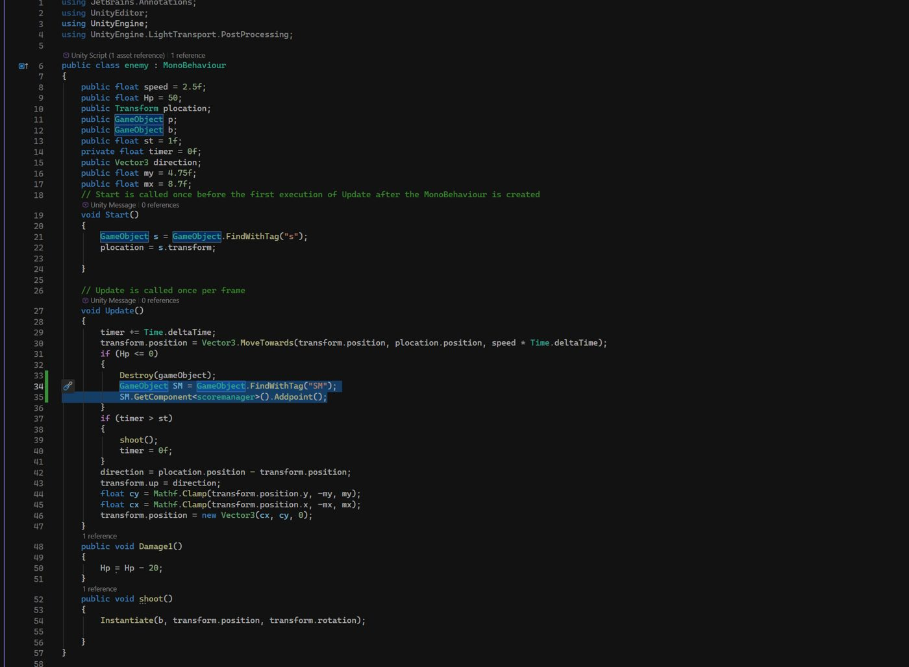
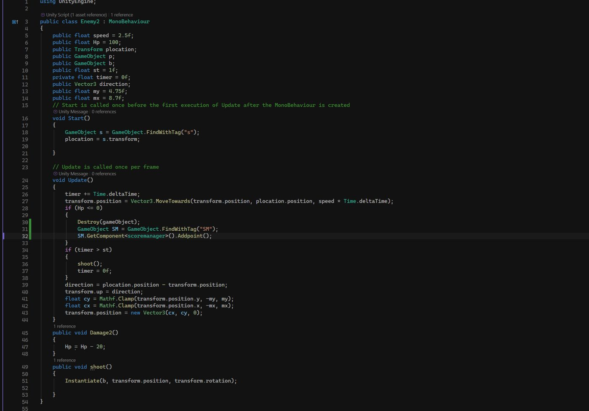
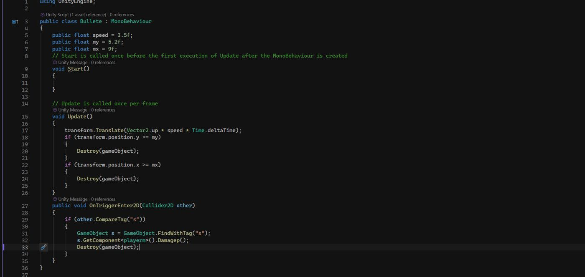
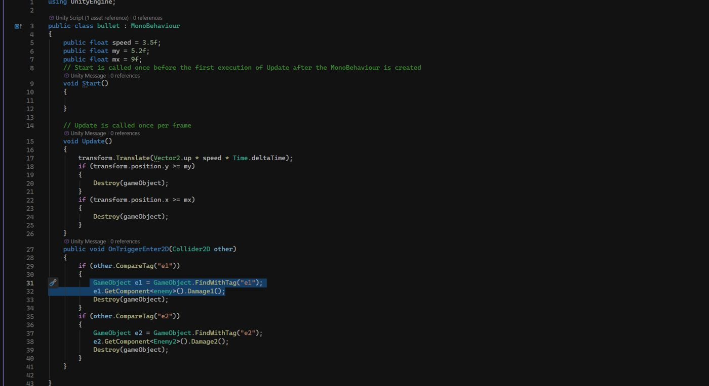
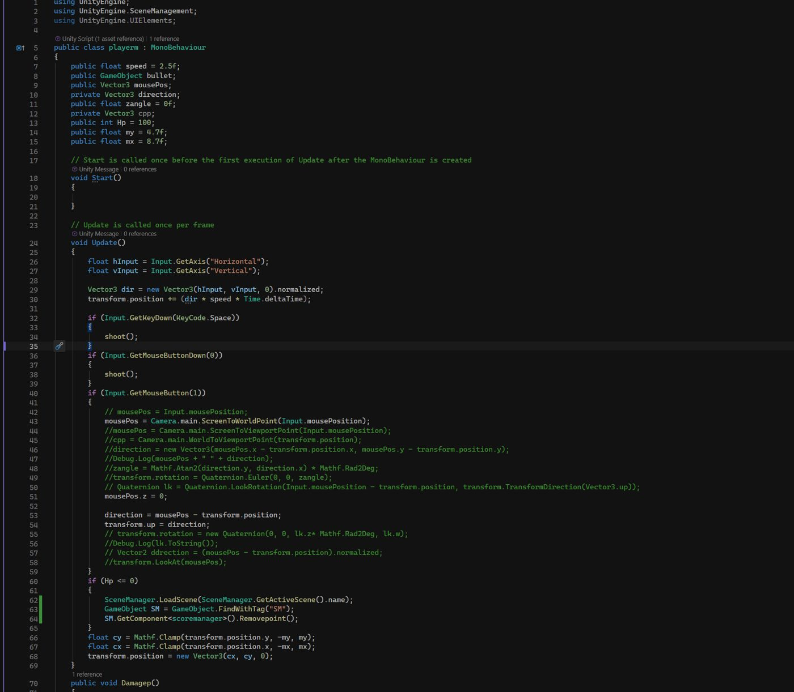
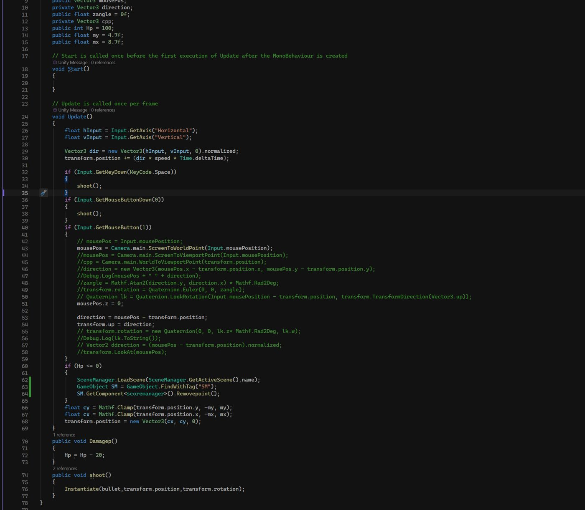

Unity games
BEV — Top-Down Shooter
Bird's-eye-view shooter: enemies spawn from a random side and hunt you, elites shoot back, and you aim with the mouse. The hardest code I've written so far.
Gameplay
How it works
Spawn runs on three timers. Timer 1 counts to 2 and spawns a normal enemy (e1, the red square, 50 HP). Timer 2 counts to 3.5 and calls location, which picks a random side of the map, top, bottom, left or right, then a random point along it, so spawns never settle into a pattern. Timer 3 reaches 7 and spawns the elite (e2, the red circle, 100 HP). Both enemy scripts move continuously towards the player, clamp to the arena, and shoot a bullet every second that does 20 damage on hit; when their HP hits zero they're destroyed and AddPoint is called.
The player bullet is the same script as the enemy's, except it calls DamageE1 or DamageE2 on whatever it hits. ScoreManager holds the score and the kill count, with AddPoint and a RemovePoint that resets it when the player dies.
PlayerM was the hardest script: a new movement system where holding the right mouse button turns the player to face the cursor, so you shoot wherever you're aiming. The green commented lines are my failed attempts; the white lines are the version that works. It also holds the HP, the damage function, shoot on space or left click, and the restart when HP reaches zero.
Featured code
playerm.cs — aim at the mouse (and the attempts that didn't work)
void Update()
{
float hInput = Input.GetAxis("Horizontal");
float vInput = Input.GetAxis("Vertical");
Vector3 dir = new Vector3(hInput, vInput, 0).normalized;
transform.position += (dir * speed * Time.deltaTime);
if (Input.GetKeyDown(KeyCode.Space)) { shoot(); }
if (Input.GetMouseButtonDown(0)) { shoot(); }
if (Input.GetMouseButton(1))
{
mousePos = Camera.main.ScreenToWorldPoint(Input.mousePosition);
//zangle = Mathf.Atan2(direction.y, direction.x) * Mathf.Rad2Deg;
//transform.rotation = Quaternion.Euler(0, 0, zangle);
mousePos.z = 0;
direction = mousePos - transform.position;
transform.up = direction;
}
if (Hp <= 0)
{
SceneManager.LoadScene(SceneManager.GetActiveScene().name);
GameObject SM = GameObject.FindWithTag("SM");
SM.GetComponent<scoremanager>().Removepoint();
}
float cy = Mathf.Clamp(transform.position.y, -my, my);
float cx = Mathf.Clamp(transform.position.x, -mx, mx);
transform.position = new Vector3(cx, cy, 0);
}
public void shoot()
{
Instantiate(bullet, transform.position, transform.rotation);
}Two lines did the job in the end, convert the mouse to world space then set transform.up to point at it, after several tries with angles and quaternions that are left in as comments.
All the scripts
9 scripts, each with what it does in my words.









Confidence, before and after
After Snake I was ready to challenge myself. I could have stuck to what I knew, but I pushed to learn new ways to do things, so a very easy project turned into something hard. My confidence hasn't grown that much, but it has improved: I'm confident in my basic code and still have a way to go with the harder stuff. 7/10. I'd struggle to remake this without help unless I removed the look-at aiming; without that I could remake it with no help.